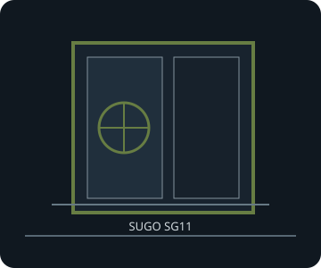

[ SUGO SG11 // FOUR-SLOT COMPACT CUBE ]
SilverStone SUGO SG11
270 × 212 × 393 mm (W × H × D), about 22.5 L; Micro-ATX/Mini-DTX/Mini-ITX cube with a standard ATX PSU and optical bay.

FITMENT CAVEAT: This record describes the named model only. Published maxima can depend on revision, brackets, fan/radiator position, PSU cable routing and drive configuration; verify the exact manual and parts before purchase or assembly.
Specifications & fit
| Exact model | SilverStone SUGO SG11 |
|---|---|
| Motherboard sizes | Micro-ATX up to 244 × 244 mm, Mini-DTX (203 × 170 mm), and Mini-ITX (170 × 170 mm); four expansion slots. |
| PSU type and fit | Standard PS2/ATX. PSU plus 5.25-inch device length is limited to a combined 370 mm; use the manual's front-bay and cabling diagrams. |
| GPU length and thickness | Maximum 368 mm long × 113 mm wide/high, within the four-slot chassis. Drive cage and front-bay configuration can reduce usable length; the manufacturer does not specify card thickness as a separate mm value. |
| CPU cooler height | Maximum CPU cooler height 82 mm. |
| Radiator and fan options | One 120 mm side intake fan supplied; optional 80 mm fan positions at top and rear. The cited SilverStone specification lists fans rather than a radiator mount; radiator fit is not confirmed. |
| Storage clearances | One external 5.25-inch bay; three internal 3.5-inch positions with shared 2.5-inch mounting capability (up to nine 2.5-inch positions across supported trays/configurations). A 5.25-inch device shares length with the ATX PSU; drive cages share the GPU path. |
| Compatibility notes | Confirm the selected motherboard, four-slot card width, optical device, ATX PSU depth and drive-cage placement as a single assembly. The 368 mm GPU maximum is not available in every cage/bay arrangement. |
Compatibility & preservation notes
Confirm the selected motherboard, four-slot card width, optical device, ATX PSU depth and drive-cage placement as a single assembly. The 368 mm GPU maximum is not available in every cage/bay arrangement.
- Record the case model/SKU, revision, included riser, brackets and manual version before changing hardware.
- Measure the actual GPU shroud, power connectors, cooler, radiator/fan stack and cable bend radii; do not assume listed maxima can coexist.
- Keep original drive trays, standoffs, fasteners, fan brackets and panel hardware with the enclosure.
Manufacturer sources
- SilverStone — SUGO SG11 product specificationsManufacturer board, card, PSU, bay and fan specifications.
- SilverStone — SG11 manual (PDF)Manufacturer mounting diagrams and combined PSU/optical-device limitations.
Sources are manufacturer product documentation and the model-specific manual; consult the matching revision for assembly dimensions.